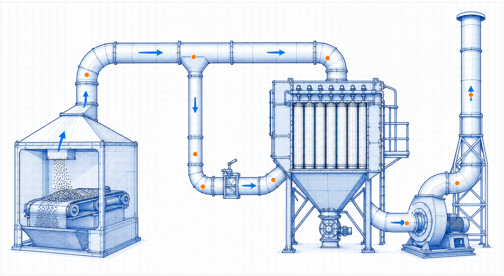
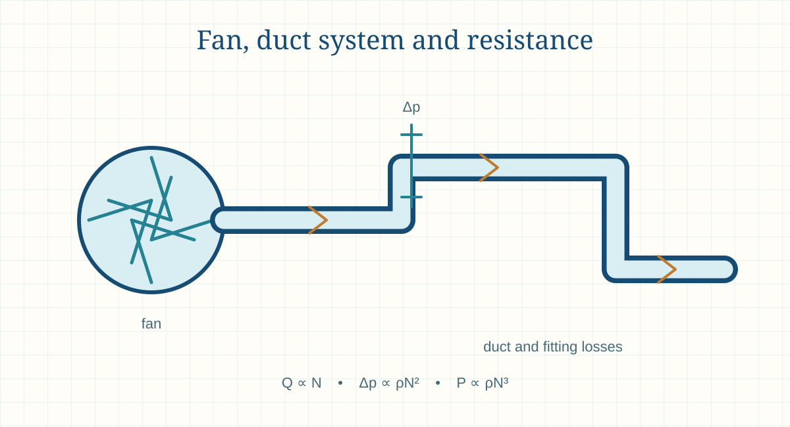

Engineering principle
Fan Laws, Static Pressure and Fan Power
Fan laws relate airflow, pressure and power to fan speed for similar conditions. Static pressure and system resistance are key to selecting and operating an industrial fan safely and efficiently.

- Content type
- Engineering principle
- Level
- Engineering › Fluid Mechanics, Piping, Pumps, Fans and Ducts › Fans and Duct Systems › Industrial Fans › Fan Laws, Static Pressure and Fan Power
- Audience
- Student · Design engineer · Project engineer · Plant engineer
- Last reviewed
- 30 August 2026
What Is Fan Laws, Static Pressure and Fan Power?
Fan laws, also called fan affinity laws, are proportional relationships used to screen how airflow, pressure and power change when the speed or size of a geometrically similar fan changes. For the same fan at comparable density, airflow is approximately proportional to speed, pressure to speed squared, and power to speed cubed.
Static pressure is the pressure component available to overcome system resistance, while fan power is the energy required at the selected duty. A fan does not deliver a fixed airflow independently of the system; its operating point is set by the intersection of the fan curve and the duct or process system curve.
These relationships are useful for early variable-speed-drive studies, capacity changes and troubleshooting. They are not a substitute for a manufacturer’s tested curve, a complete system resistance calculation or review of mechanical, motor, acoustic and surge/stall limits.
Why Is Fan Laws, Static Pressure and Fan Power Important in Engineering?
A small speed increase can have a large power consequence because power changes roughly with the cube of speed. A 10% speed increase is therefore not a 10% power increase. This matters when checking motor capacity, VFD settings, energy use, shaft speed and fan structural limits.
Fan pressure and power also depend on density. A system at high altitude or elevated temperature can move a similar actual volume but operate with different pressure and mass-flow behaviour. Curve correction and final selection must follow the fan manufacturer and relevant test standard.
Key Terms and Definitions
- Fan total pressure
- Fan pressure definition combining inlet and outlet total-pressure conditions on a stated basis.
- Fan static pressure
- Pressure definition used for a fan/system application; confirm the selected standard and curve convention.
- System curve
- Required pressure as a function of airflow through ducts, fittings and equipment.
- Affinity laws
- Approximate proportional relationships for similar fan operation.
- Fan speed, N
- Rotational speed, commonly rpm.
- Air density, ρ
- Mass per unit volume at the actual fan inlet condition.
- Brake power
- Power at the fan shaft before motor and drive losses.
- Stall or unstable region
- Operating region where fan flow/pressure behaviour may be unstable; assess with manufacturer guidance.
Fundamental Principle
For the same fan diameter and similar operating conditions, Q₂/Q₁ is approximately N₂/N₁; Δp₂/Δp₁ is approximately (N₂/N₁)²; and P₂/P₁ is approximately (N₂/N₁)³. These are screening relationships, not a guarantee across all fan designs and system conditions.
A fan curve must be read together with the system curve. Increasing speed moves the fan curve, but the actual new flow still depends on where it intersects the changed system resistance. Density correction affects pressure and power interpretation and should follow manufacturer information.
Engineering interpretation and design basis
Fan laws are similarity relations used to estimate how a comparable fan responds to a change in speed, size or density. They are most reliable when the fan geometry, flow regime and efficiency remain sufficiently similar. They are valuable for screening VFD changes and preliminary studies, but they cannot replace a manufacturer’s tested curve or a complete system-resistance calculation.
A fan’s operating point is determined jointly by the fan performance curve and the system curve. Increasing speed moves the fan characteristic, but the actual flow response depends on system resistance and control configuration. Power may rise far faster than flow because the approximate speed relationship is cubic, which can quickly exceed motor, VFD, shaft or acoustic limits.
Formulae, Symbols and Units
Flow-speed relation
Q₂/Q₁ ≈ N₂/N₁
Applicable to the same fan with comparable geometry and conditions.
Pressure-speed relation
Δp₂/Δp₁ ≈ (N₂/N₁)²
Check total/static pressure definition and density basis.
Power-speed relation
P₂/P₁ ≈ (N₂/N₁)³
Small speed changes can cause substantial shaft-power change.
Density effect screening
Δp ∝ ρ; P ∝ ρ
At comparable speed and geometry, pressure and power scale with density; use supplier correction methods.
Interpretation before use
Fan laws show trends. They do not define motor overload, sound, vibration, surge/stall behaviour, blade stress, bearing life, inlet distortion or whether a fan can operate safely at a proposed speed. Those limits come from the specific fan and manufacturer data.
Use manufacturer and specialist review for process gas, elevated temperature, corrosive or abrasive air, high energy, variable-speed, parallel-fan, emissions-control, hazardous-area and acoustically sensitive duties.
Using the result in engineering work
The basic affinity relations are usually stated as flow proportional to speed, pressure proportional to speed squared and power proportional to speed cubed for the same fan at similar density. Density correction and efficiency change must be considered separately. Do not use the simplified relations to compare unrelated fan designs or materially different gases without supplier guidance.
Static pressure, total pressure and velocity pressure should be defined consistently with the fan curve and testing convention. An error in pressure definition can lead to the wrong system curve, fan selection or measured-performance conclusion. Use the applicable manufacturer and industry convention for the fan type and measurement arrangement.
Assumptions and Validity Range
- The same fan or geometrically similar fan is being compared.
- The operating change is within the manufacturer’s permitted speed and mechanical range.
- Fan curves and system curves use compatible pressure and density definitions.
- The system has been assessed at the expected airflow range.
- Motor, drive, shaft, bearings, vibration and acoustics are reviewed separately.
- The result is preliminary until confirmed using verified manufacturer data.
Factors Affecting the Result
Fan speed
Changes flow linearly but pressure and power non-linearly.
Air density
Temperature, altitude, humidity and composition influence pressure and power.
System resistance
Duct changes, filters, dampers and equipment determine the actual operating point.
Fan geometry
Impeller diameter, blade design and housing affect the curve and allowable range.
Inlet conditions
Swirl, restriction and non-uniform flow can reduce performance or increase noise/vibration.
Control method
VFD, damper, inlet vane and pitch control have different energy and operating effects.

Step-by-Step Engineering Method
- Define the existing duty. Record verified flow, pressure definition, density, speed, power, fan curve and system configuration.
- Build or update the system curve. Include ducts, fittings, filters, equipment and expected operating cases.
- Apply fan-law screening. Estimate the direction and approximate scale of speed, pressure and power changes.
- Check the new operating intersection. Do not assume flow changes exactly with speed in a fixed system.
- Check density basis. Correct pressure and power interpretation for actual inlet condition as required by the supplier.
- Review mechanical/electrical limits. Confirm impeller, shaft, bearing, motor, drive and VFD ratings.
- Review stability and acoustics. Verify that the operating range avoids prohibited or unstable regions.
- Confirm with manufacturer data. Use a verified curve before implementation.
What to record with the result
Document fan model, impeller, speed, curve revision, pressure definition, density basis, system curve, proposed control range, calculated power, motor/VFD limits and manufacturer confirmation. This is necessary for a safe capacity change or energy study.
Check the upper-speed case carefully. Power can rise faster than flow, and an apparently small setpoint change can exceed motor, VFD or mechanical limits. Also review the low-speed case for stable airflow, minimum process demand and any stall restriction.
Design-review checklist
- Identify the fan and curve basis. Confirm fan type, speed, impeller, gas density, test standard, curve revision and the pressure definition used.
- Define the system. Include all duct, hood, filter, equipment, damper, collector and discharge losses at actual operating conditions.
- Set the operating envelope. Identify minimum, normal, maximum, clean, dirty, seasonal and future flow requirements.
- Locate operating points. Intersect the fan curve with the appropriate system curve for each case.
- Apply fan laws cautiously. Use them only for comparable changes and treat the output as a screening estimate.
- Check absorbed power. Verify motor, VFD, electrical supply, mechanical speed, shaft, bearing and temperature limits across the range.
- Check stability and acoustics. Avoid unsuitable stall, surge, vibration or noise regions according to manufacturer guidance.
- Plan verification. Specify the flow, pressure, temperature, density and measurement locations needed during commissioning or troubleshooting.
Illustrative Engineering Example
Hypothetical preliminary example — not a design calculation
For a preliminary same-fan comparison, increasing speed by 10% gives N₂/N₁ = 1.10. The affinity laws estimate flow ratio 1.10, pressure ratio 1.21 and power ratio 1.331.
Thus an estimated 10% airflow increase can require about 33% more fan shaft power before density, system intersection and efficiency changes are checked. Use this only for early screening and verify the final point from the manufacturer curve.
Industrial Applications
Variable-speed fans
Screen airflow, pressure and energy effects before setting a VFD range.
Dust collection
Assess fan response to filter loading and changing branch demand.
HVAC systems
Match supply/exhaust fan performance with ducts, coils, terminals and controls.
Combustion air
Review air delivery and pressure changes at varying process demand.
Process exhaust
Maintain required extraction through treatment equipment and stacks.
Energy studies
Compare speed control with throttling or damper control.
Fan replacement
Screen the effect of changed speed or geometry before supplier selection.
Troubleshooting
Interpret overload, low airflow or unexpected pressure after system modifications.
Selection and operating context
Fan selection should consider the entire operating envelope, not simply the highest efficiency at one point. A fan may need stable turndown, a dirty-filter margin, high-temperature materials, corrosion resistance, access for maintenance, acceptable sound, safe motor loading and compatibility with VFD control. These factors are often as important as the nominal airflow and pressure.
Dampers and VFDs are different control tools. Dampers raise system resistance and dissipate pressure; VFDs can reduce speed and often reduce energy at part load, but their achievable range is constrained by fan stability, motor cooling, minimum flow, process capture requirements and mechanical limitations. The control choice must follow the system and process duty.
Decision record and final-design handover
A fan selection and control record should state the fan curve revision, impeller and speed, gas density and temperature, pressure convention, system curves, operating envelope, motor/VFD limits, noise target, required turndown, dirty-condition margin and commissioning data. This prevents a later speed change from being made against an incomplete or incompatible curve basis.
Commission fan control from measured system behaviour rather than assuming the affinity laws exactly describe the installation. Confirm flow, pressure, speed, power, temperature, density and vibration through the expected range. If the fan serves capture, combustion or pollution-control duties, verify that the minimum process requirement is met before pursuing energy savings by reducing speed.
Final design and commissioning checks
- Confirm the fan curve, test standard, pressure definition and reference gas condition.
- Build system curves for all operating, clean/dirty and future cases at actual density.
- Check power, motor, VFD, shaft, bearing and mechanical speed limits across the range.
- Review stable operating range, stall/surge risk, noise and vibration for the selected control method.
- Evaluate damper and VFD strategies against process minimum-flow and energy requirements.
- Specify commissioning measurements for flow, pressure, temperature, density, speed, power and vibration.
Scope control before final use
For final approval, define the permitted speed range and control response together with the process owner. The maximum speed must respect power and mechanical limits; the minimum speed must sustain capture, combustion, cooling, ventilation or process flow. These limits should be configured, tested and documented rather than left to informal operator judgement.
Common Mistakes and Limitations
- Assuming a 10% speed increase requires only 10% more power.
- Using fan laws across different fan geometries without similarity review.
- Ignoring density differences between test and operating conditions.
- Comparing static pressure with total-pressure data without a consistent definition.
- Ignoring the system curve and assuming airflow scales exactly with speed.
- Operating beyond motor, VFD or fan mechanical speed limits.
- Ignoring stall, surge, vibration and acoustic restrictions.
- Treating a fan-law estimate as a final guaranteed performance value.
Troubleshooting signals
Flow lower than expected
Verify system resistance, filter condition, damper position, rotation, fan speed, density and whether the measured pressure uses the same definition as the curve.
Motor overload after speed increase
Review cubic power sensitivity, actual density, fan efficiency, system resistance and whether the operating point shifted toward high flow.
Unstable operation
Check for stall or surge region, poor system-curve match, parallel fans, pulsation, inlet distortion and rapid control changes.
High sound level
Investigate tip speed, local restrictions, damper throttling, turbulence, discharge arrangement, structural transmission and fan operating point.
Frequently Asked Questions
What are the basic fan laws?
For the same fan and comparable conditions, flow is approximately proportional to speed, pressure to speed squared and power to speed cubed.
Why does power rise faster than flow?
The fan-power relationship is approximately cubic with speed, which makes speed increases energy-intensive.
Does fan pressure depend on air density?
Yes. Pressure and power interpretation change with density; use supplier correction methods.
Can a VFD save fan energy?
Often, but savings and operating limits depend on the system curve, fan efficiency and required airflow range.
What is fan static pressure?
It is a defined fan/system pressure term; use the manufacturer and applicable standard convention consistently.
Can fan laws select a fan?
No. They screen changes; final selection needs verified fan curves and system data.
Why does a damper change fan flow?
It raises system resistance and moves the fan operating point.
What should be checked before raising speed?
Fan curve, system curve, power, motor/VFD rating, mechanical limits, stability, noise and vibration.
Does altitude affect a fan?
Yes. Lower density affects pressure, power and mass flow at a given actual volume.
Can this page be used for final design?
No. Final work needs manufacturer data, complete system analysis and qualified engineering review.
Why does a small speed increase cause a large power rise?
For a similar fan at comparable conditions, power varies approximately with the cube of speed. This makes motor and VFD checks essential before increasing speed.
Can a VFD always replace a damper?
Not always. The fan must remain stable, mechanically suitable and capable of meeting process minimum-flow and pressure requirements across the speed range.
What pressure should be used for fan selection?
Use the pressure definition required by the manufacturer’s curve and the applicable test convention, matched to the complete system calculation.
Do fan laws apply to every fan type?
They are similarity relations for comparable configurations and conditions. Final selection needs the specific manufacturer curve and operating-limit review.
Literature-informed technical note
Engineering context and review boundaries
Fluid-system references consistently require a defined system boundary and operating basis before applying an equation. Geometry, roughness, density, viscosity, temperature, flow distribution, fittings, elevation, instrument location and the equipment operating point influence the result and its uncertainty.
For fans and ducts, calculate the complete path from capture or inlet through fittings, equipment and discharge. Check the density basis, branch flows, leakage, damper position, fouling and fan operating point; a straight-duct value alone does not establish reliable system performance.
Use this page to structure preliminary understanding, data collection and review—not as a substitute for approved design information. Record the source revision, units, operating mode, assumptions, measurement location and known limitations so another competent reviewer can reproduce the conclusion.
Literature reviewed for this update
- Mechanical Engineering Handbook, fluid systems and heat-transfer sections.
- Air Pollution Control Technology Handbook, hood, duct and fan chapters.
- ACGIH, Industrial Ventilation (supplied source library).
This is an original educational summary based on the listed literature. It does not reproduce protected source text, figures, tables or design data. Confirm current standards, project documents and supplier information before use.
References
- Bleier, F. P. Fan Handbook: Selection, Application, and Design. McGraw-Hill. 1997.
- Air Movement and Control Association International. AMCA Publication 201: Fans and Systems. Use the current licensed publication and manufacturer data for final work.
- Munson, B. R., Okiishi, T. H., Huebsch, W. W. and Rothmayer, A. P. Fundamentals of Fluid Mechanics. 9th ed. Wiley. 2021.
- Fox, R. W., McDonald, A. T., Pritchard, P. J. and Leylegian, J. C. Fox and McDonald’s Introduction to Fluid Mechanics. 10th ed. Wiley. 2020.
This page is an original educational summary. It does not reproduce protected book text, figures, tables or standards material. Use current approved sources and the project design basis for final work.
Review Information
Evidence expected before design use
This Fan Laws, Static Pressure and Fan Power guide explains the calculation and decision framework, but it is not a substitute for the project design record. Before using a result beyond a preliminary study, verify the actual equipment or line configuration, operating range, material or fluid condition, drawings, measurement basis and governing project requirements.
Retain the input source, calculation version, units, condition basis, assumptions, limits and reviewer comments with the result. Recalculate when a flow, temperature, pressure, geometry, equipment curve, control setting or system line-up changes; an earlier valid result may not remain valid after a plant modification.
Where reliability, safety, environmental compliance, production capacity or a supplier guarantee is affected, compare the result against current manufacturer information, applicable codes and qualified engineering review before making a final decision. This requirement remains important even when a simple worked example appears to match the expected duty. Record curve tolerances, safety margins and revisions as well.